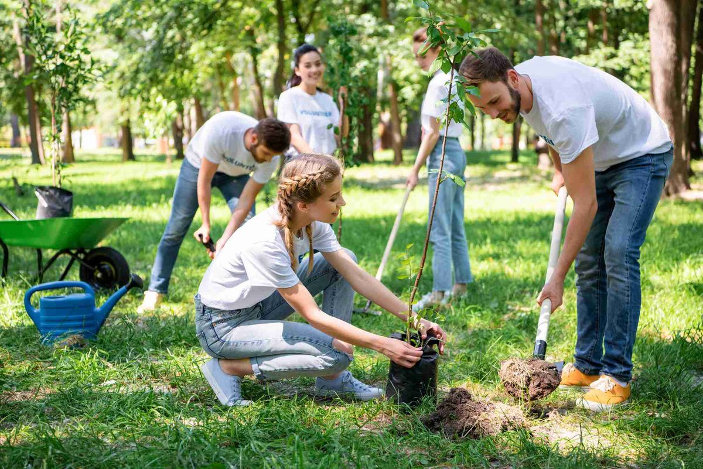
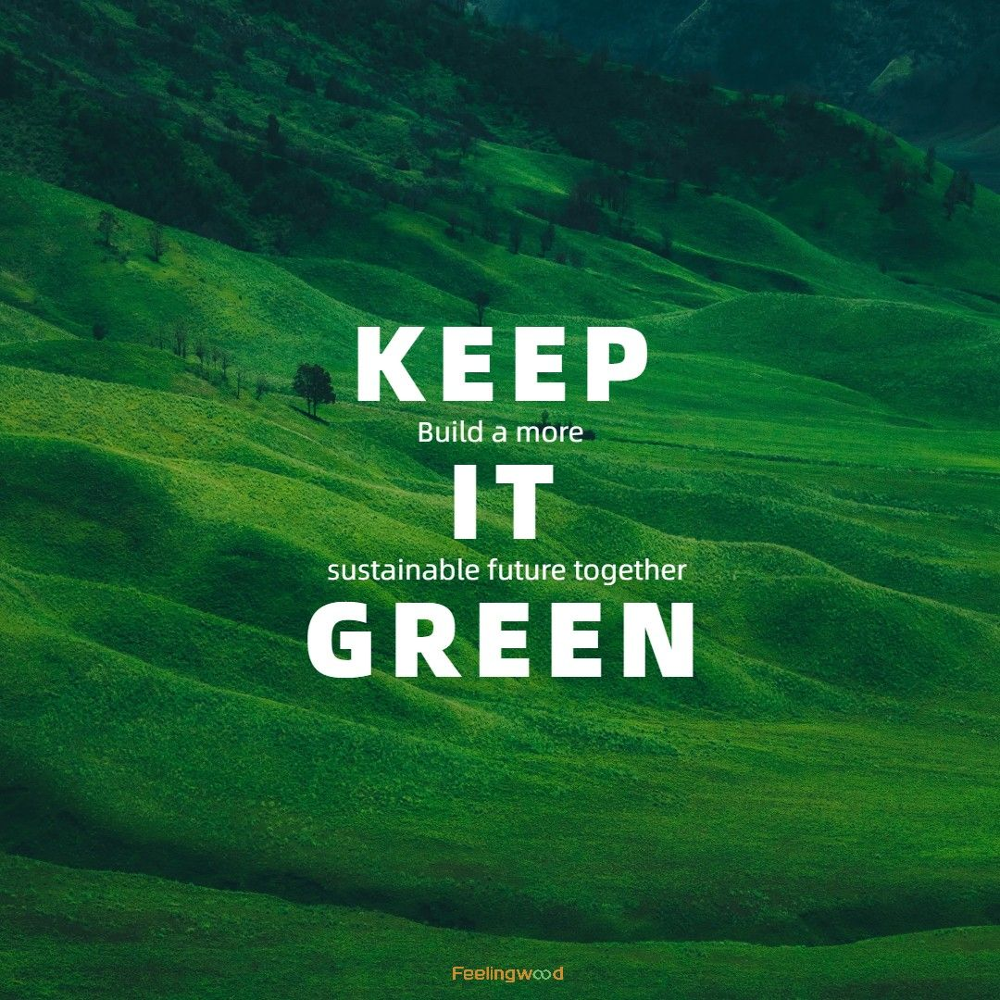

Feedback & Program Directory
Explore and share your feedback with us.
Volunteering Opportunity
♡

Forest Conservation Volunteering
🌳
Protects forests
⏱️
3–5 hours voluteering per day
💷
Program Fees from £100
| Duration | Program Fee |
|---|---|
| 1 week | Free £0/day |
Volunteer with local conservation teams to protect and restore forest ecosystems.
Tasks include planting native trees, removing invasive species, and monitoring
wildlife habitats in your local area.

📢 Student Campaign
♡
Wildlife Awareness Campus Campaign
🦁
Raises awareness
⏱️
2–4 hours per week
💷
Fees from £0
| Duration | Program Fee |
|---|---|
| 1 semester | Free £0/day |
Join a student-led campaign raising awareness about endangered species on campus.
Organise events, create social media content, and collaborate with local
environmental organisations to drive real change in your community.

🎓 Student Action
♡
Campus Tree Planting Drive
🌱
Grows biodiversity
⏱️
4–6 hours per day
💷
Fees from £20
| Duration | Program Fee |
|---|---|
| 2 weeks | £20 £5/day |
Take action on campus by planting native trees and creating green corridors that
support local wildlife. Work alongside university grounds staff and environmental
science students to make your campus a greener, healthier place.

🏘️ Community Project
♡
Local Wetland Restoration Project
💧
Restores wetlands
⏱️
4–5 hours per day
💷
Fees from £50
| Duration | Program Fee |
|---|---|
| 2 weeks | £50 £12/day |
Partner with local conservation groups to restore degraded wetlands in your
community. Help re-establish native plant species, improve water quality, and
create safe habitats for birds, amphibians, and other wildlife.